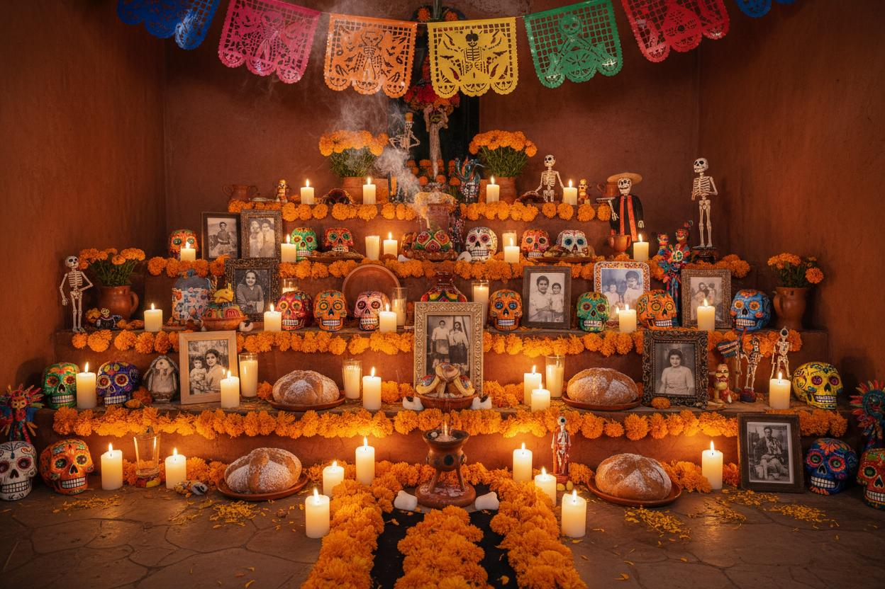
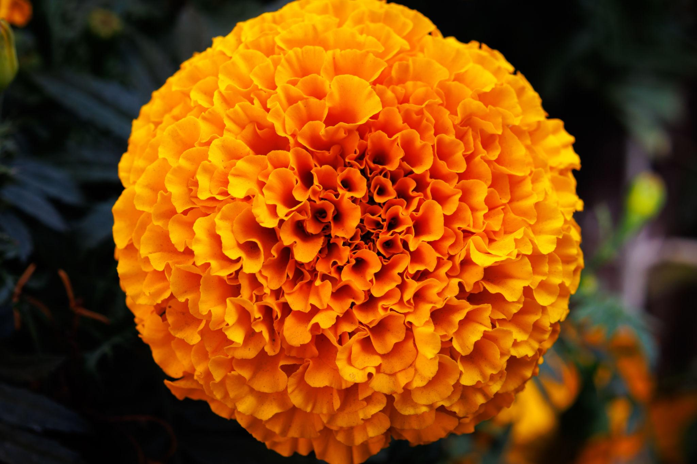
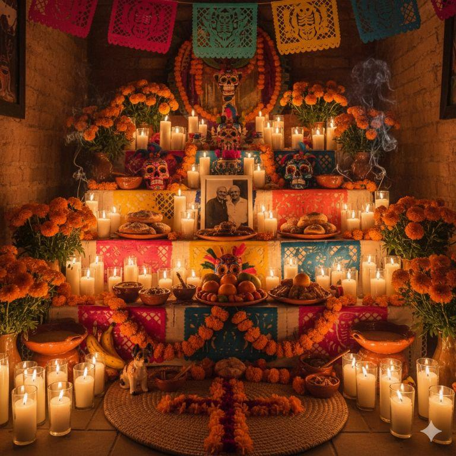
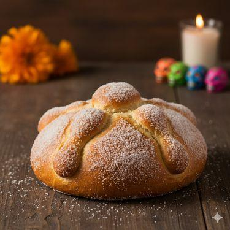
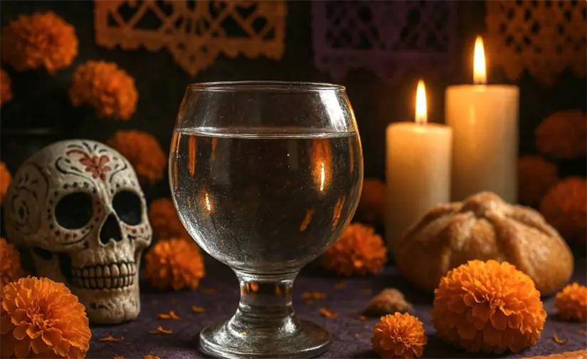
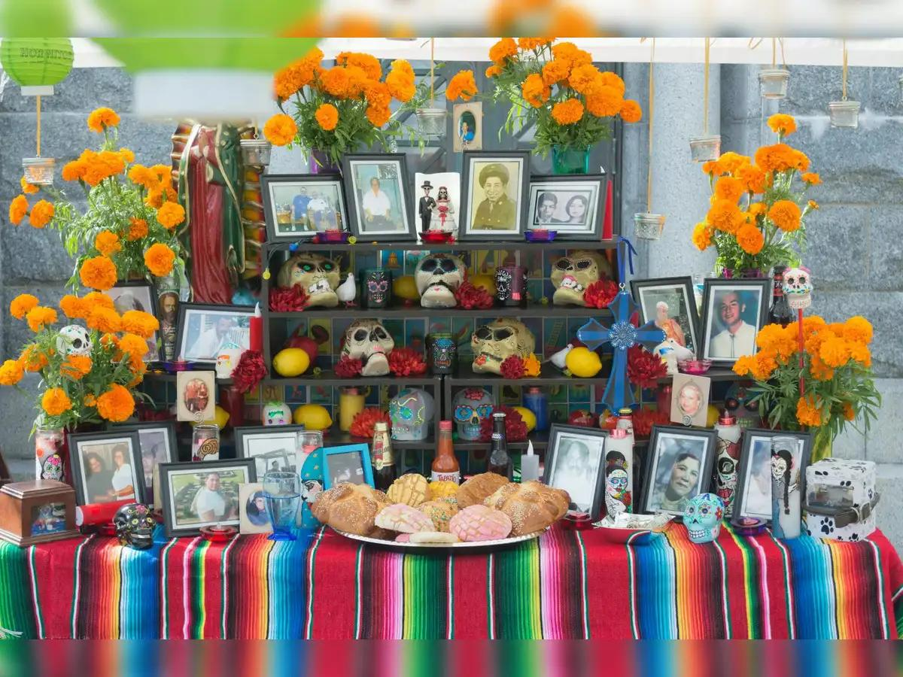

El altar del Día de Muertos es una tradición mexicana que se realiza para recordar y honrar a nuestros seres queridos que ya fallecieron.

Representan el camino que guía a las almas hacia el altar.

Representan la luz que guía a las almas de nuestros seres queridos.

Es uno de los alimentos tradicionales que se colocan en el altar.

Representa la pureza y se ofrece para calmar la sed de las almas.

Se colocan para recordar a las personas que ya fallecieron.

El Día de Muertos es una celebración muy importante en México porque nos permite recordar con cariño a las personas que formaron parte de nuestra vida.